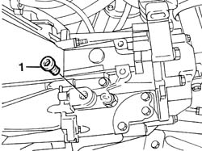
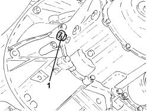

0010T41 MANUAL GEARBOX OIL - Check level and top up, if necessary
- Path
- Procedures > 00 MAINTENANCE > 0010 NEW VEHICLES AND MAINTENANCE > 0010T VEHICLE FLUIDS > 0010T41 MANUAL GEARBOX OIL - Check level and top up, if necessary
- Kind
- repair procedure (removal / refitting; the operation number is the code)
- Applies to
- all engines; all production periods
- Interactive page
- https://sloeber94.github.io/elrnDB-fDbl/en/#/2584125
Applies to: engines: 1.2 8v, 1.6 16v, 1.3 JTD 16V, 1.9 JTD 8V, 1.9 DIESEL; all production periods
Position the vehicle on a lift.
Raise the vehicle.
1. Undo the cap on the bellhousing checking that the oil contained in the actual bellhousing is at the level of the opening in the cap. If the level is below this, top up using oil of the same specifications.
Type | Component | Description | Qty. | |
|---|---|---|---|---|
- | Oil | MANUAL GEARBOX/DIFFERENTIAL FLUID | TUTELA CAR ZC 75 Synth | - |

Applies to: engines: 1.2 8v, 1.6 16v, 1.3 JTD 16V, 1.9 JTD 8V, 1.9 DIESEL; all production periods
Tighten the enigne oil level cap to torque.
Fastening | Component | dia | Value (daNm) | |
|---|---|---|---|---|
- | Plug | GEAR CASING PADS | M22 x 1.5 | 3.6 |
Lower the vehicle and remove from the lift.
Applies to: engines: 1.4 8v; production: da 12/03; only with equipment: MY 2005
Position the vehicle on a lift.
1. Undo the gearbox casing filler plug.

Applies to: engines: 1.4 8v; production: da 12/03; only with equipment: MY 2005
Check the fluid in the transmission is level with the filler plug hole. Otherwise top up with the recommended fluid.
Type | Component | Description | Qty. | |
|---|---|---|---|---|
- | Oil [l] | MANUAL GEARBOX/DIFFERENTIAL | TUTELA CAR ZC 75 SYNTH | 1.98 |
Clean the drain plug, refit and tighten it to the recommended torque.
Fastening | Component | dia | Value (daNm) | |
|---|---|---|---|---|
- | Filler plug | GEAR CASING PADS | M22 | (Differential side) 2.3 - 2.8 |
Remove the vehicle from the lift.
Topics that link to this page (9)
- S22 NOISE' GEARBOX / IN NEUTRAL
- X15 GEARBOX/DIFFERENTIAL OIL LEAKS
- 0010K80 80,000km service coupon - emission control versions
- 0010M60 160,000km service coupon - emission control versions
- 2110A10 manual gearbox and differential - r + r
- 2110C30 gearbox rear cover - r + r.
- 2110D53 left hand flange on differential - r+r
- 2110D63 rh differential shaft oil seal - r r
- 2710A42 l/h or r/h drive shaft (one) - r + r with gear box removed